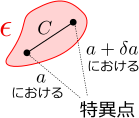
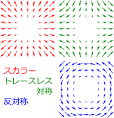

4.電荷・電流密度の逆算
電磁場
が与えられた時、電荷・電流密度を逆算するためには、ガウスの法則とアンペールの法則を使えばよい
（それぞれマクスウェル方程式()の第1式と第4式）。
電磁場 から電荷・電流密度 を求めたい
電磁場
から電荷・電流密度
を求めたい。第1章と第2章では、電場
および磁場
が、以下のように与えられることを見た：
（それぞれクーロンの法則とビオ・サバールの法則）
この式から電磁場
を求めることができるわけだが、それには、予め電荷・電流密度
が分かっている必要がある。しかし、
は直接測定できるものではないので、実際には、逆に、
の測定結果から逆算して
を求めることも必要となる。要するに、
が測定などから分かっている時、式(
)を逆に解いて
の形にしたいわけである。
もしできなかったとしたら、電磁場の測定から、電荷・電流密度が一意的に決まらないことになり、そもそも電荷・電流密度が正しく定義された量なのかどうかに疑問符が付くことになる。
式(
)を式(
)の形にすることは、数学的な問題であるが、自明ではない
（実際には電荷保存則が必要となる）。しかし、もし、そのようなことが可能であれば、式(
)の微分を考えればよいのではないかと想像できる。というのも、ある点
での電荷・電流密度の決定に、遠く離れた場所の電磁場が影響するとは考えづらいからである。しかし、微分するといっても、式(
)の右辺は広義積分なので、その微分については、議論が必要がある。
（もし広義積分でなければ話は簡単で、微分と積分の順序を入れ替えて、微分を積分の中に入れればよい。しかし、式()の場合、そうすると積分が発散する。）
そこでこの章では、まず、「広義積分」について説明してから、使えそうな「広義積分の微分公式」を証明する。その後、式(
)を与える「ガウスの法則とアンペールの法則」を導出する、という3節構成で議論を進める：
広義積分広義積分の微分公式ガウスの法則とアンペールの法則
4.1広義積分
この節では、広義積分として以下の2種類を扱う
・特異点を持つ関数の積分・非有界な領域での積分
特異点とは、関数が発散する点のことである。非有界な領域とは、どんなに大きな球をとっても、その球の中に閉じ込めることができないような領域である。
特異点を持つ関数の積分
これまで積分を定義する際、積分領域を無数の微小要素に刻んで、それらの寄与を足し合わせるという方法を用いてきた（区分求積法）。しかし、特異点があると、そのような点を含む微小要素の寄与が定義できない。
第1章の1.3節でも述べたように、式(
)の被積分関数は特異点を持つため、通常の積分は定義できない。そのため、まず特異点をくりぬいた状態で定義し、くりぬく領域を小さくしていった極限を取ることで定義するのであった。このように、通常の積分に対して何らかの極限を取ることで定義されるものを、広義積分という。
この手法は、式(
)の場合以外にも、一般に適用できる。即ち、積分領域
上に被積分関数
が特異点を持つ場合、その広義積分
は、特異点の近傍
をくりぬいて定義した後、
の極限を取ればよい：
右辺の極限が
（極限の取り方によらず）存在する場合、即ち、特異点の微小近傍からの寄与が無視できる場合に、広義積分が値を持つことになる。逆に、極限が存在しない場合、広義積分は不可能である。
3次元空間の場合、特異点近傍で
の広義積分が値を持つのは、
の場合である（次段落の【4.1-注1】）。
非有界な領域での積分
また、式(
)の積分区間は空間全体となっているが、このように非有界な領域での積分も実際には広義積分である。
（ただし、現実的には、
の分布が無限に広がることは無いので、被積分関数が
でない領域は有界となる。よって実際には、式()は、有界な領域上での積分と見なせる。）
この場合の広義積分の定義は、まず有界な領域で積分を定義しておいて、それを広くしていった極限を取ればよい。特異点がある場合と同じ記号を使うならば、有界でない領域
での積分は、領域を、有界でない部分
と、有界な部分
に分け、
上での積分において、領域をどんどん広げていった極限
を考えればよい：
この場合も、右辺の極限が存在する場合にのみ、積分が存在することになる。
非有界な領域での広義積分では、無限遠において、被積分関数が「速やかに」0に収束する必要がある。例えば被積分関数が定数の場合、広義積分は、積分領域の体積に比例するので明らかに発散する。どの程度「速やか」である必要があるかというと、3次元空間において十分遠くで
に比例する場合、
であればよい（以下の【4.1-注1】）。
【4.1-注1】べき関数の広義積分の収束条件
3次元空間において、広義積分：
が存在する条件は以下のようになる：
証明
(A)の場合については、既に第1章の【1.3-注1】で示した。(B)についても同様に示せる。
4.2広義積分の微分公式
この章の冒頭で、式(
)から、積分を消去して被積分関数に含まれる
を取り出すためには、広義積分の微分が必要だろうと述べた。この節では、微分と積分を入れ替える公式【4.2-注1】と、被積分関数を取り出す公式【4.2-注2】について述べる。
ライプニッツの積分則：積分と微分は交換可能
広義積分の場合でも、積分と微分が交換可能であるというライプニッツの積分則が成り立つ（以下の【4.3-注1】）。
なお、式()の右辺の値が存在するという条件は重要である。存在していないことに気づかずにこの公式を使って計算を続けてしまうと、間違った結果になる（よくある）。
【4.2-注1】広義積分におけるライプニッツの積分則（Leibniz integral rule）
関数
に対し、
での広義積分を考える。この時、
での微分は、広義積分と可換である：
ただし、両辺の値が存在し、かつ、
と
の特異点は同じ位置にあるとする。
証明

まず、
の値を、
から
まで変化させた時、特異点はある曲線上を動く（動かない場合は点のまま）。この曲線を
とおき、
を含むように
を取る（右図）。これを用いて、以下のように示せる：（
で積分することは分かっているので、
を省略している）
とに分ける第項を次近似。を除いたのは、上では次近似できないため。
なお、最後の式で
の極限を取ることができるのは、
の体積が0の時（
の次元が
の次元より小さい時）のみである。従って、そうでない場合、例えば、「
が1次元で特異点が
とともに移動する場合」や「3次元であっても、
の特異点が面状に広がっており、それが
とともに変化する場合」には、このままでは成り立たない。しかし、今後そのような場合を考えることはない。
3次元ラプラシアンの公式
ラプラシアン（またはラプラス演算子）と呼ばれる演算子
は、3次元の場合、以下のように定義される：（3次元以外にも容易に拡張できる）
また、以下の微分方程式をポアソン方程式という：
与えられた
から
を求める公式が存在し、3次元の場合、以下の【4.2-注2】のようになる（
の解を足す自由度があるのでこれ以外の解もある）。
【4.2-注2】3次元ポアソン方程式の解の公式
3次元ラプラシアン
に対し、以下が成り立つ：
の内部の外部
ただし、左辺の値が存在し、かつ、
は
上で特異点を持たないとする。
証明
まず、
が
に含まれていない場合
（
）、
上に発散する点はなくなるので、
を積分の中に入れてよい：
ところが、以下の【4.2-注3】の式(
)により、
赤字部分は
となる。
次は、
の場合である。同じように積分の中に
を入れて、結果は
としたくなるが、間違いである。というのも、ライプニッツの積分公式の条件を満たしていないからである。
を中に入れると被積分関数が
になるので問題ないように見えるかもしれないが、
を作用させてできる3つの項を全て足し合わせて初めて
になるのであって、個別の項は
ではなく、逆3乗関数なので広義積分することもできない。
さて、
の場合、特異点である
の近傍を
として、領域を
と
の2つに分けてやると、
上の積分は
の場合と同じく
となる。よって、
と置き換えてよい：
ここで、
はいくらでも小さくできるので、
は、
上の典型的な値である
で置き換えることができる。よって、積分の外に出せる：
（
は
に作用しないことに注意。実際に、
を固定して1次近似を考えてみれば、微分に対して定数になることが分かる。あるいは、
内での最大値
と最小値
で
を置き換えたものを用いて、不等式で挟み撃ちにしてもよい。）
後は、
であることを言えばよい。
として適当な半径の球を取って実際に積分を実行すればよい（半径は
などとおいてもよいが以下の計算には不要）。ただし、
に対する微分を考えなくてよいように、
は
を含むが、
に依存しないようにとる。そのため、
の中心
は
ではなくなる。
を代入し、を積分の中に入れるニュートンの球殻定理：第章の【注】
【4.2-注3】3次元ラプラシアンの公式
3次元ラプラシアン
に対し、以下が成り立つ：（
）
証明
2階微分
（
）を作用させてみると
積の微分公式
なので、上式のトレースを取ったものが、式(
)の左辺となる：
（3次元なので
に注意）
4.3ガウスの法則とアンペールの法則
この節では、クーロンの法則およびビオ・サバールの法則(
)：
から、電荷・電流密度
を逆算するための式：
を導出する。これらの4式をまとめて、静電磁場のマクスウェル方程式という。特に、
を与える第1式をガウスの法則、
を与える第4式をアンペールの法則という。
ただし、式(
)と式(
)では、式(
)で使っていた
の代わりに、電気定数
および磁気定数
と呼ばれる以下の量を用いている：
これは、式(
)を簡単にするためである。
ガウスの法則
まず、クーロンの法則(
)から、マクスウェル方程式(
)の上側2式を示す。まず、式(
)より、微分
を括りだす：
（
は
での微分であり
には作用しない）
微分公式ライプニッツの積分則によりを外に出す
この最後の式において、
を作用させると
より、【4.3-注2】が使える形になるので、式(
)の第1式
が得られる。また、
を作用させると、
（偏微分の可換性）により
になるので、同第2式
が得られる。
微分といえば1次近似なので、この結果を視覚的に捉えるには、ある点
の周辺における1次近似を考えればよい：（右辺は
での値）
右辺第1項は定数ベクトル場である。同第2項が作るベクトル場は、スカラー・トレースレス対称・反対称の3種類のベクトル場に、一意的に分解できる（力学編第14章の【14.1-注2】）。実際、任意の3次元行列
は
スカラートレースレス対称反対称
と分解できるので、これに
を代入すればよい：
トレースレス対称
スカラー部分のことをベクトル場の発散、反対称部分のことをベクトル場の回転というのであった（分母の定数を除いたもの）。

これら3種類の成分が作るベクトル場を図示すると、右図のようになる
（力学編第14章の【14.1-注1】）。式(
)の第1式
は、電場の
発散（放射状のベクトル場）が
に比例することを表していることになるが、電荷
が電磁場の源であることを考えるともっともらしい。また、同第2式
は、電場が
回転（渦を巻くようなベクトル場）を持たないことを意味しているが、これについても、電荷が作る電場は放射状に広がることを考えれば自然だろう。
アンペールの法則
次は、マクスウェル方程式(
)の下側2式である。磁場(
)についても、同様に微分
を括りだせる：
を使った後、を外に出す
最後の式に、
を作用させると、
より、式(
)の第3式が得られる。
問題は、
を作用させた場合である。この場合、力学編第10章の【10.2-注2】の簡約公式より
が成り立つので
変数変換した後を積分の中に入れる
となる。従って、
赤字部分が
であれば、式(
)の第4式に一致する。電荷の保存則を仮定すると、以下の【4.3-注1】により、
赤字部分は
になる。
電場の時と同様に、ベクトル場の1次近似を用いて解釈すれば、1次近似された磁場は、スカラー成分、即ち、放射状の成分を持たず、また、電流がある箇所では、電流を取り巻くような渦状のベクトル場が生じる。
【4.3-注1】電荷の保存：連続の方程式
電荷が保存する時、電荷・電流密度
は以下を満たす：
これを連続の方程式という。
補足
電荷の保存則が成り立つことは、実験によって確かめられている。
電荷密度
が時間変化していない場合、
となるので、電流密度
は、
を満たすことになる。
は、ベクトル場
の1次近似において、放射状の成分を持たないということである。これが電荷の生成や消滅がないことを意味していることは直感的にも分かるだろう。